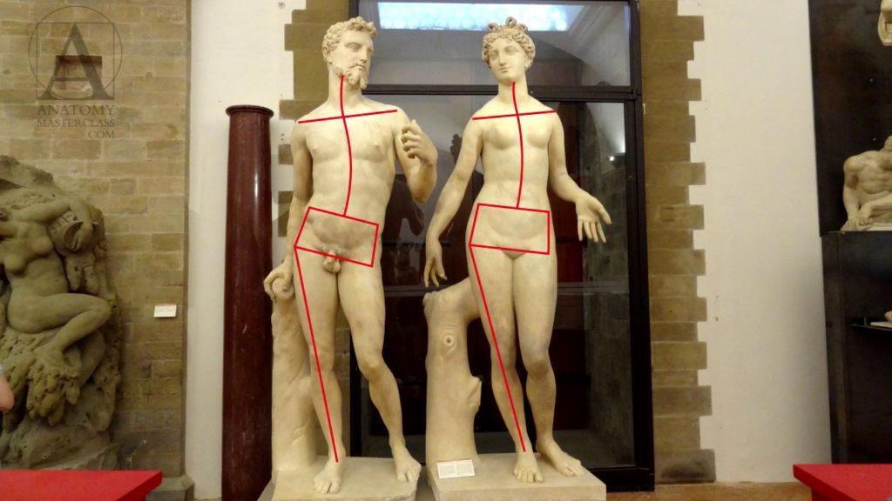
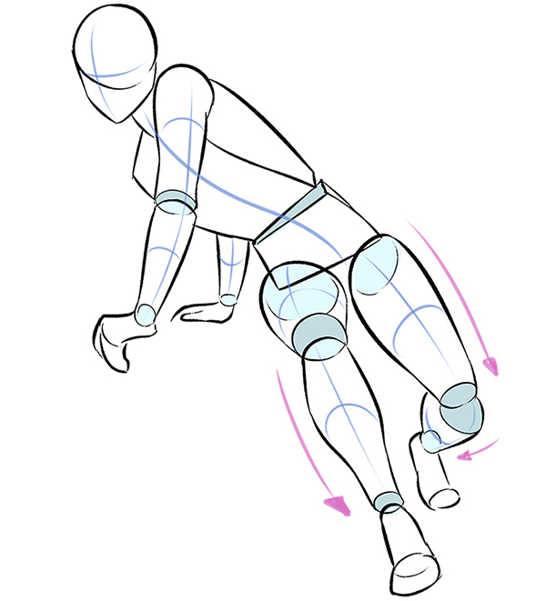
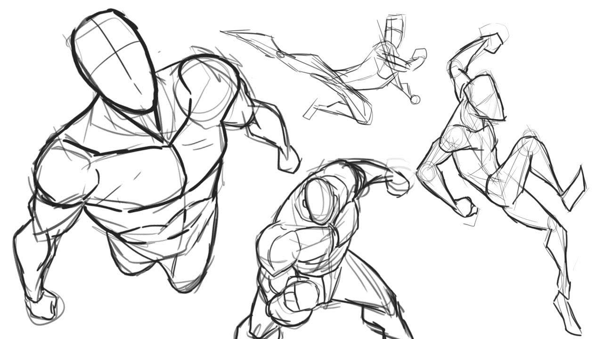
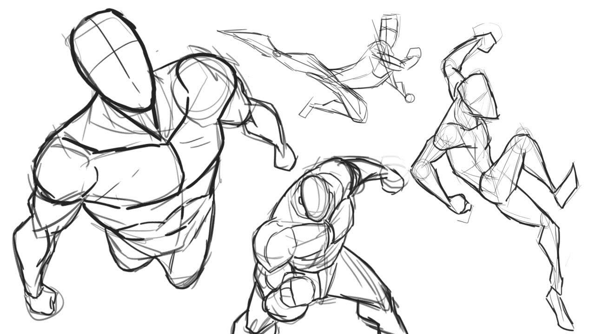

Consejos para dibujar el cuerpo humano en acción
La línea de acción
- Visualizar una sola línea superpuesta a tu dibujo puede ser una manera simple de crear una sensación de movimiento. Esta línea de acción puede ser recta o curva; ambas pueden dar una sensación diferente de movimiento.
- La línea de acción se refiere a la forma simplificada que toma la figura según su gesto esencial. Es muy importante tener en cuenta tu tema al crearla, puesto que lo que dicha figura transmite depende en gran medida de dicho gesto. A partir de la línea de acción, puedes dibujar las extremidades, el torso y la cabeza del cuerpo humano.
- Es importante que mantengas las líneas fluidas. Recuerda que las líneas suaves pueden mostrar calma y flexibilidad, mientras que las líneas angulosas muestran tensión o actividad. Sin embargo, es mejor evitar una línea de acción vertical perfectamente recta, pues podría transmitir una sensación de quietud.
Para dibujar una figura en movimiento, primero hemos de basarnos en varios conceptos de base, y conocer bien de que partes se compone la figura humana y como funcionan estas . Una buena manera de dibujar nuestra figura es seguir estos pasos:
- Dibujar la cabeza y hacia donde queramos que mire el personaje.
- Señalar la dirección del cuerpo con una línea. Normalmente esta línea correspondería a la columna vertebral, pero ésta más bien señalaría la dirección global del cuerpo.
- Señalar la dirección de las piernas y hallar el pie en el que se apoya el peso del cuerpo, y el pie en el que no.
- Señalar la dirección de las manos.

Emplea figuras como esquema preliminar
El uso de diferentes formas es una herramienta importante para dibujar el cuerpo humano en acción. Además de ayudarte a transmitir la personalidad, las formas también pueden sugerir movimientos o emociones.
Si dibujas un personaje formado por cuadrados, este puede sentirse más lento y estable. Por otra parte, si creas un personaje formado por triángulos este emitirá una sensación más excitante, mientras que los personajes que dibujes utilizando círculos o curvas transmitirán agrado y animosidad.
La clave más importante a tener en cuenta es que una figura angulosa genera un tipo de dinamismo distinto a una curveada. Posteriormente a ello hay que sumarle que tan cerrados o abiertos son dichos ángulos y en donde se localizan.

Fuerza y ritmo
La fuerza y el ritmo proporcionan mucha información visual con la que puedes trabajar: el peso de tu personaje, el equilibrio de su pose o la falta de ella.
El cuerpo humano es bastante complejo. Por ello puede resultarte difícil dibujar las proporciones correctas y pensar en 3D al dibujar el cuerpo humano en acción. Te recomiendo que dibujes una base que te ayude a discernir el volumen de cada elemento. Por ejemplo puedes utilizar figuras geométricas como esferas, cubos y cilindros que te permitan representar la estructura de cada una de las partes del cuerpo.
.jpg)
.jpg)
.jpg)
.jpg) 
